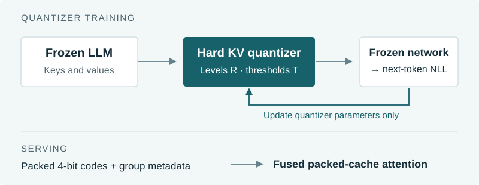

EMNLP 2026 Main conference · Poster · 1357
BeyondBetter-than-Full-Precision KV Caches via Learnable Non-Uniform Quantization as Implicit Regularization
University of Central Florida
Learn the quantizer. Freeze the model. Decode packed KV.
Compression need not trade away model quality. Beyond learns non-uniform KV-cache quantizers directly from next-token prediction loss. Across three tested instruction-tuned models, 4-bit caches lower held-out perplexity and improve long-context benchmark averages. A separate packed-cache implementation brings compression to vLLM serving.
KV payload compression
4-bit codes, group size 32. Includes min/scale metadata; before page padding.
Lower held-out perplexity
Versus the full-precision Native baseline on the three tested models.
Peak decode-kernel speedup
Versus FlashAttention-4 on one NVIDIA B300, across the tested configurations.
Peak serving throughput gain
Complete vLLM paths on one B300, at batch 1536 with cold 1024+128-token requests.
01 / Method
Learn from language-model loss.
Local KV reconstruction error is only a proxy for generation quality: a cache perturbation passes through attention and the remaining network before it changes a prediction. Beyond learns representation levels R and ordered decision thresholds T directly from next-token negative log-likelihood, while keeping the backbone weights frozen.

For each 32-value group, normalize with its minimum and scale, assign each value to one of 16 learned levels using 15 interior thresholds, then rescale for attention. Training and inference share the same hard bin assignment.
Hard forward, loss-driven updates
Identity straight-through input gradients and boundary-localized threshold pseudo-gradients enable learning. Only the quantizer parameters are updated.
What fits in the cache
Each group stores 128 code bits plus 32 min/scale metadata bits: 5.0 effective bits per scalar, or 3.2× payload compression relative to 16-bit KV, before page padding.
Payload compression is not a claim of 3.2× lower total GPU memory: model weights, workspaces, and cache-allocation overhead are separate.
02 / Quality
Beyond the full-precision baseline.
Quantizer-only training lowers held-out Pile perplexity on all three tested instruction-tuned models. On LongBench, Beyond achieves the highest Avg21 among Native, KV-FP8, TurboQuant, and Beyond for each model.
| Model | Pile PPL ↓ Native → Beyond | PPL reduction | LongBench Avg21 ↑ Native → Beyond | Avg21 gain |
|---|---|---|---|---|
| Llama-3.1-8B-Instruct | 5.50 → 5.38 | 2.2% | 43.4 → 44.9 | +1.5 points |
| Ministral-3-14B-Instruct-2512-BF16 | 6.77 → 6.58 | 2.8% | 45.4 → 47.4 | +2.0 points |
| Qwen3-30B-A3B-Instruct-2507 | 5.31 → 4.94 | 6.9% | 48.5 → 50.2 | +1.7 points |
Perplexity uses 150 disjoint held-out Pile evaluation chunks. Avg21 is the unweighted mean over 21 LongBench-v1 tasks. Values and relative reductions follow the final poster; percentages are not recomputed from the displayed, rounded PPL values.
Gains are task-dependent, not improvements on every individual benchmark. The compared methods use different effective cache budgets; the paper provides additional roughly matched-bit and adaptation controls.
03 / Packed execution
From compressed KV
to faster decoding.
A fused CuTe decode kernel reads packed codes and combines level lookup, affine rescaling, attention scoring, online softmax, and value accumulation. The vLLM integration measures how this kernel translates into end-to-end serving.
1.50× peak kernel speedup
Versus FlashAttention-4 on one NVIDIA B300, using Llama-3.1-8B-Instruct geometry. The poster shows all 16 measured context/batch pairs.
1.17× peak serving throughput
Versus the FA4 vLLM path at batch 1536. Tested batch capacity increases from 1582 to at least 4500: at least 2.84×.
Two measurements, two scopes
Kernel-only: batches 1 and 16, 1K–128K contexts, 50 warmups, and 500 CUDA-graph replays. Speedup is FA4 latency divided by Beyond latency.
End-to-end: Llama-3.1-8B-Instruct in BF16 on one B300; the official vLLM throughput benchmark with cold 1024-token prompts plus 128 generated tokens, an 8192-token scheduling budget, prefix caching off, and GPU-memory fraction 0.90.
Capacity: the first tested KV-capacity failures occur at 1583 for FA4 and 4800 for Beyond. Batch 4500 is a verified working point, not an exact maximum for Beyond.
See both performance plots in the final posterEvidence boundaries. Quality evaluation uses training-equivalent fake quantize/dequantize (fake-QDQ) with a floating-point cache. Real cache compression and serving measurements use the packed backend. These are separate experiments, and kernel speedup is not end-to-end throughput gain.